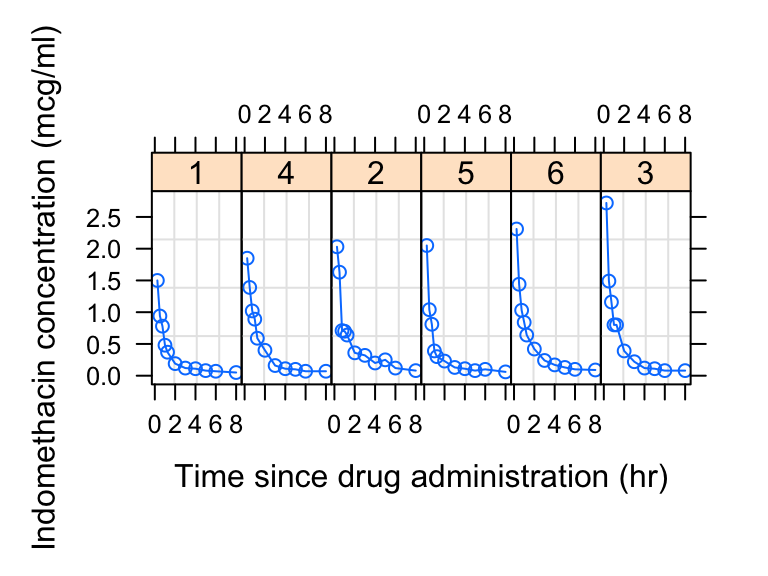

1 installation
1.1 R
R is the computing language we will use to run our chemometric analyses and produce high quality plots. If you already have R installed (you will need at least version 4.1.1), you can go straight to installing RStudio. If not, follow these steps to install R:
Click on “Download R for <your operating system>” (see footnote), depending on your operating system you will select “Download R for Linux”, “Download R for (Mac) OS X”, or “Download R for Windows”.
We will use <this notation> quite a bit. It indicates a place where you should insert information, data, or something similar that corresponds to your particular situation. In this example it means insert “your operating system”, i.e. Linux, (Mac) OS X, or Windows.
For Mac: download the .pkg file for the latest release. For PC: click “install R for the first time”, then click “Download R <version> for Windows”.
After the executable finishes downloading (in Windows, it is a file with .exe extension; for Mac, it is a .dmg file or a .dmg inside a .pkg file), open the file as an administrator, and follow the installation instructions. R should install without any problems. You can click OK for all of the windows that pop-up during installation, and choose a “regular” installation (if given the choice).
If you have trouble installing R please google “Install R Mac” or “Install R PC” and follow one the many video tutorials out there. If you have tried this and are still having trouble, please contact me.
1.2 RStudio
Once we install R, we can install RStudio, which is essentially a convenient way of interacting with R. Some people do not like RStudio and prefer to interact with R directly. This is fine, but many beginning R users find RStudio helpful, so I recommend it. Follow these steps to install RStudio:
Go to https://rstudio.com/
Click “DOWNLOAD” at the top of the page.
Click the “DOWNLOAD” button that corresponds to RStudio Desktop with the free Open Source License.
The page may automatically detect which operating system you are using and recommend a version for you. If it does, download that file (.exe for PC or .dmg for Mac). If not, scroll down to the “All Installers” section and download the file that is right for you. Open the file as an administrator, and follow the installation instructions. RStudio should install without any problems. You can click OK for all of the windows that pop-up during installation, and choose a “regular” installation (if given the choice).
If you have trouble installing RStudio please google “Install RStudio Mac” or “Install RStudio PC” and following one the many video tutorials out there. If you have tried this and are still having trouble, please contact me.
1.3 Verification
Open RStudio by clicking on the appropriate file in your applications folder, or wherever it is saved on your computer. You will see several windows. One is the Code Editor, one is the R Console, one is the Workspace and History, and one is the Plots and Files window.

The R Console window should have a > in it. Type head(Indometh). This should display the first six lines of a data set describing the pharmacokinets of indomethacin. This is one of the built in datasets in R - you do not need any additional files to run this test.
head(Indometh)
## Grouped Data: conc ~ time | Subject
## Subject time conc
## 1 1 0.25 1.50
## 2 1 0.50 0.94
## 3 1 0.75 0.78
## 4 1 1.00 0.48
## 5 1 1.25 0.37
## 6 1 2.00 0.19Next, type plot(Indometh) into the R Console. This will plot the indomethacin dataset in a basic way.
plot(Indometh)
If both the above commands (head(Indometh) and plot(Indometh)) worked and there were no error messages during installation, then you should be ready to proceed.
1.4 tidyverse
For us to run our analyses, we need to install a set of add-on functions that expand R’s capabilities. These functions are collected in something called the tidyverse, a very well-known and widely-used R package. You do not need to manually download anything to complete this installation - R will do it for you. In the R Console, type install.packages("tidyverse", repos = "http://cran.us.r-project.org") to install the tidyverse. Let’s try it:
RSudio might ask you: “Do you want to install from sources the packages which need compilation? (Yes/no/cancel)”, for now, type no and press enter.
install.packages("tidyverse", repos = "http://cran.us.r-project.org")Let’s make sure your version of the tidyverse is installed correctly. To do this, we will load the tidyverse library/package inside of an R session. We can do this using library(tidyverse). Let’s try it:
library(tidyverse)If the library load correctly - then you are set to go! If not, try updating your R / RStudio installations, the re installing the tidyverse. If this still fails, please contact me.
1.5 TeX
In this class we will generate high quality reports suitable for submission to supervisors, academic journals, etc. For this, we need the typesetting engine TeX. There are a few ways to do this. The easiest way is using the following commands:
install.packages(c('tinytex', 'rmarkdown'))If you are on Mac, you may get an error about “not being able to write to a path” or something like that. In that case you probably need to open your terminal and run the following two commands:
sudo chown -R `whoami`:admin /usr/local/bin
and then
~/Library/TinyTeX/bin/*/tlmgr path add
Then, on both Mac and PC, you then need to do:
tinytex::install_tinytex()Other options are: if you have Windows, download and install MikTeX. If you have OSX, you can download and install MacTeX.
1.6 phylochemistry
In addition to the tidyverse, there are a variety of other packages we will need, as well as some datasets and custom functions. These call all be loaded by doing the following.
First, attempt to load phylochemistry:
source("http://thebustalab.github.io/phylochemistry/phylochemistry.R")The first time you try this, it will very likely say: “You need to install the following packages before proceeding […] Run: installPhylochemistry() to automatically install the required packages.”
This means that some of the prerequisite packages that phylochemistry needs are not installed. If this happens, run the following:
installPhylochemistry()Sometimes when you run installPhylochemistry() you will get a message:
Update all/some/none? [a/s/n]:
In this case, it is generally advisable to enter a into the console and then press enter, indicating to R that you wish to update anything and everything that can be updated.
Other times you may get this message:
Do you want to install from sources the packages which need compilation? (Yes/no/cancel)
You can reply yes if you wish, but for simplicity’s sake it is okay to say no. I usually start with saying no, only reverting to yes if things don’t work down the line.
Once that is complete, and assuming no errors are displayed, attempt to load phylochemistry again:
source("http://thebustalab.github.io/phylochemistry/phylochemistry.R")1.7 xcms
If you wish to run the GC-MS integration app that comes with phylochemistry, please also install XCMS by running the following in your RStudio console:
if (!requireNamespace("BiocManager", quietly = TRUE))
install.packages("BiocManager")
BiocManager::install("xcms")